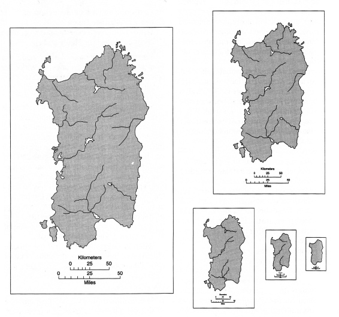
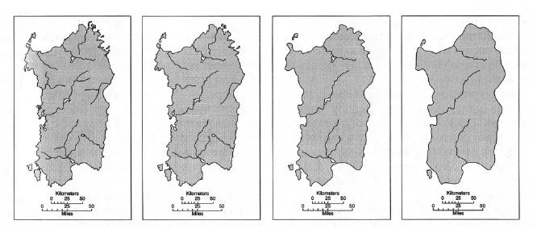

|
Tool of Statecraft
as far back as Rome
|
 |
Estate map
late 13th or 14th C onwards
|
Palomino, Diego (1549). Traça de la conquista del capitán Diego Palomino: [de las Relaciónes Geográficas, Provincia de Chuquimayo, Perú]
Kain, R. J. P., & Baigent, E. (1992). The Cadastral Map in the Service of the State: A History of Property Mapping. Chicago: University of Chicago Press.
Timothy B Norris
Librarian Associate Professor, Data Science
UM Libraries - Institute for Data Science and Computing
tnorris@miami.edu
You can follow along at:
https://tibbben.github.io/geospatial-visualization/slides/slides000.html
https://bit.ly/3c5SZXO
- Maps tell stories ...
... the story is about place and space - Maps are representations of reality
Location and attributes: spatial relationships
- Maps are performances
... and they have purpose - Maps are abstractions
symbolization and generalization

The 6200 BC “map” of Çatalhöyük in Turkey

Is this a Map?
National Geographic made the map of the US based on translations of place names from their origins in Native American languages.
Hereford Mappa Mundi, Richard of Haldingham and Lafford, c 1300
Gerhard Mercator, 1569

Napoleon's march on Moscow March 1812, Charles Joseph Minard
When a large outbreak occurred in London in 1854, Dr. John Snow created a map that settled a debate between two schools of thought: that cholera is transmitted not through the inhalation of infected air, but through the ingestion of contaminated water or food.
- What stories will you tell with maps?
- Tension between fiction and reality, map and territory
- The critical turn in cartography - maps and power
- Story (imaginative) vs. grid (lack of imagination)
- Maps as navigational tools for data as well as the world
- Maps are more interesting than reality?
- where?
- what (who)?
- how much?
- extent or area?
- [ when? ]
- distance between (travel time)?
- path of least resistance (route)?
- overlap of areas (jurisdictions)?
- areal statistics (demographics)
- land use / land cover change
- clusters (spatial statistics)
- interpolation
- [ why? ]
- watersheds (flows)
- traffic patterns
- pollution
- view sheds
- geo-fencing (buffers)
- scope of question (is it doable)
- scale and type of output (design question)
- visualization (print, online, etc)
- how will you get the data!!!
- Geographic Information System
- collections of tools, data, hardware, and people
- Geographic Information Science
- systematic inquiry into research questions about the relationship between GIS and socio-natural systems
- Geographic Information conStruction
- tool building for storage, collection or analysis of geospatial data
Wright, D. J., Goodchild, M. F., & Proctor, J. D. (1997). Demystifying the Persistent Ambiguity of GIS as ‘Tool’ versus ‘Science’.
Annals of the Association of American Geographers, 87(2), 346-362. doi:10.1111/0004-5608.872057

The system of organization can be digital (software) or analog (drawn on paper).
The actual process of organization is done with a purpose by human beings.

- Physical Model
(files on disk) - Logical Model
(data structures - vector and raster) - Conceptual Model
(discrete or continuous) - Reality
(the world out there)
- If all project files can reasonable fit in one folder ...
- Good for sharing projects
- If you have lots of data that gets shared across projects ...
- Bad for sharing projects
- Good for data re-use across projects
|
|
|
|
- Points, Lines and Polygons
- all based on x,y coordinate pairs of geographic data
- lines and polygons are built from groups of points
- attribute data is linked to points, lines, or polygons (features)
- each feature is associated with a unique record in an attribute table

- Common File Formats
| Name | Extension | Source |
| shapefile | .shp * | ESRI |
| geojson | .json | open |
| geodatabase | .gdb | ESRI |
| google earth | .kml | open |
| autoCAD | .dxf .dwg | AutoDesk |
(and more - be careful!!)
- Grids of Rows and Columns
- each cell represents an x,y coordinate
- each cell has a specific size on the surface of the earth (scale)
- cell scale is based on the resolution of the image
- each cell has only one value (color or categorical)

- Resolution
- Original resolution of the collected data limits spatial accuracy
- Can’t improve by replicating cells to create smaller size cells
- Location implied; rounded to cell coordinate (center of cell)

- Types of Data
- Continuous
elevation, temperature - Categorical/Discrete
land use

- Common File Formats
| Name | Extension | Source |
| geotiff | .tiff .tif | open |
| jpg | .jpg | open |
| Arcinfo GRID | ESRI | |
| ERDAS imagine | .img | ERDAS |
- In ESRI you have several choices - add basemap
- for QGIS, google search for ...
- NOT suitable for printing!! The real alternative is good raster data
Coordinate Systems
Artistic cartography:
creative ways to peel the globe
- Datum
- Geographic coordinate system
- Projected coordinate system
- Geospatial data must have: datum + geographic coordinate system
- Projected coordinate systems are optional
(but needed for measurement)
- Center of the earth?
- That which is given?
- Ellipsoid
mathematically defined surface approximating the shape of the earth - Geoid
surface of the earths gravity field - approx sea level
- Latitude and Longitude - spherical coordinates
- Very common, but cannot be used for measurement
- Things to remember:
- ESPG - European Petroleum Survey Group
- WGS 84 - most common globally - ESPG:4326
- NAD 83 - most common in the United States - ESPG:4269
- meters or feet - Cartesian coordinates
- Used for measurement and mapping
- Things to remember:
- Projected Coordinate Systems are specific to the area being mapped
- In the USA: the "State Plane System"
- Around the Globe: the "UTM Grid"
- For web based mapping systems
WGS 84 Web Mercator - ESPG:3857


- Generalization
- Selection
- The decision of what geographic phenomena are represented on the map - Simplification
- The decision of what spatial resolution will be used for representing geographic phenomena
- Selection
- Classification
- The decision of how to display attribute information that represents geographic phenomena
Scale Matters
Purpose Matters
Monmonier, M. (1996 [1991]). How to Lie With Maps. Chicago, University of Chicago Press.
Scale matters: several examples of selection across different scales
Purpose matters: selection across constant scale where on the left physical geography is emphasized whereas on the right there is a base map good for showing attribute information of non-physical phenomena
How long is the coastline of Great Britain??

- Point remove
- Bend simplify
- Simplify Geometries
- GRASS - v.generalize
Classification is not always desirable
-
Attribute data directly linked to the visual variable
- the color is linked to the data (a satellite image)
- the size is linked to the data (a proportional symbol map) - For interval or ratio measurement
Classed: how many classes?
- Clorapleth: 5-7 is recommended
- Chorachromatic: < 7
- How to decide on class divisions?
A non-classed proportional symbol map. Note how you automatically class them in your mind.
- Be careful with the range of sizes (above)
- Be careful of optical illusions (right)
- Tool set
- collection of software programs
- in some cases referred to as a stack
- Data model
- Relational databases (tables)
- Extensible data models (trees)
- Raster data (images)
- Scripting/programming languages
- Tool set
- ArcGIS Desktop
- ArcGIS Pro *NEW*
- Relational data model
- shapfiles (.shp)
- geodatabases (.gdb)
- geotiffs (.tif)
- database servers (SQLServer, posgreSQL)
- Scripting languages
- python
- Tool set
- QGIS - http://www.qgis.org/en/site/
- base: Geospatial Data Abstraction Library (GDAL)
- base: Open GIS Reference (OGR)
- Relational data model
- shapfiles (.shp)
- geodatabases (.gdb)
- geotiffs (.tif)
- database servers (postgreSQL, oracle)
- Scripting languages
- python
- Tool set
- R - https://www.r-project.org/
- packages: maps, ggplot2
- leaflet for visualization
- Relational and Tree data model
- raw text, csv (tables)
- raw text, json (trees)
- raw text, grids (raster)
- Scripting languages
- R
- University of Miami Resources
- for an ESRI account contact Abraham Parrish (GIS Librarian): aparrish@miami.edu
- for library GIS resources see http://sp.library.miami.edu/subjects/gis
- in the Geography department contact Chris Hanson (lab manager) hansonc@miami.edu
- for ArcGIS Pro contact Maria L. Estevanez (RSMAS) mestevanez@rsmas.miami.edu
- for FOSS and advanced GIS contact Timothy Norris (UML/CCS) tnorris@miami.edu
- Tool set
- ArcGIS Online
- ESRI Storymap
- ArcGIS for Server - for serving data and images
- Relational data model
- feature services (ArcGIS Online)
- database servers (SQLServer, posgreSQL)
- Scripting languages
- not really any
- Tool set
- MapServer - http://mapserver.org/
- base: Geospatial Data Abstraction Library (GDAL)
- base: Open GIS Reference (OGR)
- Relational data model
- shapfiles (.shp)
- geotiffs (.tif)
- Scripting/programming languages
- c++ family
- python, ruby, php
- Tool set
- Google Earth - https://www.google.com/earth/
- table data model
- Keyhole Markup Language (KML)
- Scripting languages
- not really any
- Tool set
- Front end API (javascript)
- MapBox-GL - https://docs.mapbox.com/mapbox-gl-js/api/
- Google - https://developers.google.com/maps/documentation/
Look for "Maps Javascript API" - HTML - javascript - CSS
- tree and raster only
- json, kml (trees)
- jpg, png, etc (raster)
- Scripting/programming languages
- javascript/HTML/CSS (front end)
- anything (backend)
- ESRI storymap - we have this here on campus - https://storymaps.arcgis.com/
- example: Taxi Cab Terrain
- for an account contact Abraham Parrish (GIS Librarian): aparrish@miami.edu
- Tool set
- Front end API (javascript - html - css)
- Leaflet (oldest FOSS API) - http://leafletjs.com/
- Polymaps (a Stamen project) - http://polymaps.org/
- Open Street Map Reference list
https://wiki.openstreetmap.org/wiki/Frameworks - Backend
- RESTful endpoints to database servers
- Tile servers (vector or raster)
- RESTful endpoints to map servers
- Industry standard for geospatial data sharing
- ArcGIS Online - https://www.arcgis.com/index.html
NOTE: sharing depends on who is providing the data - Many government agencies
Miami-Dade County https://gis-mdc.opendata.arcgis.com
Florda Department of Health https://fdoh.maps.arcgis.com/home/index.html
- Custom built data sharing (common approaches)
- Relational database (LAMP stack or similar)
NOTE: the database must have geospatial extensions
(postGIS for postgreSQL for example) - Non SQL database (mongo or similar)
- Search engine (SOLR/Lucene or similar)
- WMS/WMTS - Web Map Service
- Returns raster images from requests with bounding boxes and scale
- WMTS - Web Map Tile Service
- WFS - Web Feature Service
- Returns xml or geoJSON from requests with bounding boxes or feature attributes
- Results follow Geospatial Markup Language (xml) or GeoJSON schema
- WCS - Web Coverage Service
- Returns xml or geoJSON from requests with bounding boxes or feature attributes
- Coverages are multidimensional representations of space-time phenomena
- ArcGIS Map Service
- Returns xml or geoJSON from requests with bounding boxes or feature attributes
- Returns raster images based on bounding box and scale
- What is returned is determined by server side configuration
- ArcGIS Object Service
- Allows for customization of the ArcGIS Map Service
- ArcGIS Map Service Example
- ESRI
- https://server.arcgisonline.com/ArcGIS/rest/services/World_Topo_Map/
MapServer/tile/{z}/{y}/{x} - https://server.arcgisonline.com/ArcGIS/rest/services/World_Topo_Map/
MapServer/tile/14/6980/4538.png - NatGeo_World_Map, USA_Topo_Maps, World_Imagery, World_Physical_Map,
World_Shaded_Relief, World_Street_Map, World_Terrain_Base, World_Topo_Map
- https://server.arcgisonline.com/ArcGIS/rest/services/World_Topo_Map/
- Stamen - http://maps.stamen.com/
- http://a.tile.stamen.com/toner/{z}/{x}/{y}.png
- http://c.tile.stamen.com/terrain/14/4538/6980.png
- toner, watercolor, terrain
- Open Street Map
- https://a.tile.openstreetmap.org/{z}/{x}/{y}.png
- https://a.tile.openstreetmap.org/14/4538/6980.png
- reference list: https://wiki.openstreetmap.org/wiki/Tile_servers
{kind=link}
{kind=link}
{kind=link}
- Custom built (common approaches)
- http webserver (NGINX or apache for example) [raster]
'slippy' tiles in folder structure z/x/y (z is zoom) - TileserverGL running in Docker container [vector]
http://tileserver.org
github: https://github.com/maptiler/tileserver-gl
- NOTE: all tiles are pre-rendered
- Raster
- gdal2tiles, open source, one image only, very simply and functional
- ArcGIS Pro "tile packages", proprietary and powerful
- MapServer "Mapcache", open source and powerful
- imagemagick and gdal, open source and requires creativity
- Vector
- tippecanoe (from MapBox), open source and powerful
- ArcGIS Pro "tile packages", proprietary and powerful
- OpenMapTiles.org, opensource and powerful
- What are the four abstraction layers for geospatial data?
- What four elements of your project do you need to consider before beginning?
- What are the three common data models for GIS?
- What is the most common map projection for web mapping applications?
- What are the two principle components of a map projection?
- What are the three definitions of GIS?
- What are the three key elements of a GIS assemblage?
- What are WMS, WFS, and WMTS?